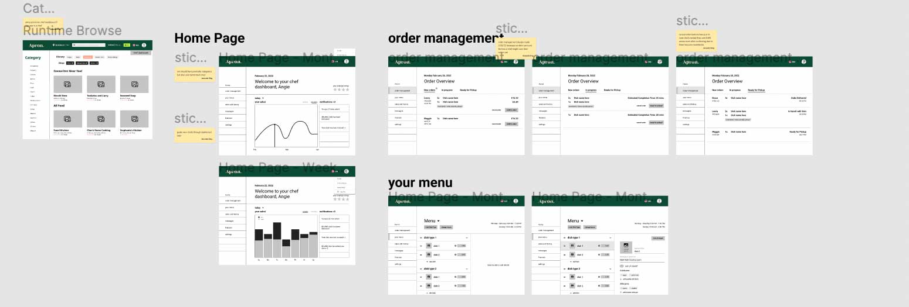

3 Months
School Work
Visual Design
UI Design
UX Research
Teamwork
My final capstone project for my undergraduate degree was a combination of skills we learned from teamwork, product management, visual design, UX research, and business. The assignment we were given was using prompt #10 of the UN sustainability development goal of reducing inequalities, to develop a conceptual digital solution and business plan. Working in a group of 7, we all came up with different problem areas we can tackle within the topics of inequalities. Given our history of working together before, we agreed on a topic related to food and see how it can help immigrants settle into their new countries. We narrowed it done to seeing how home cooking can be a viable source of income for them.
The assignment deadlines had 3 known checkpoints before the final presentation. To keep our team organized in our tasks, we created a kanban board with a priority matrix in Notion. Along with the Notion task manager, we had 2 weekly group meetings each week. One in the beginning of the week and one at the end of the week that were an hour long. Our team structure was done through a departmentalization organizational structure and we ran the project through the agile method.
After doing our initial round of research, it was not viable to do this concept in our home country of Canada as the strict food laws would not allow a lot of home cooked meals to be sold. This meant we had to look around at countries with food laws that made selling food from home a possibility. Eventually we landed on the United Kingdom due to the laws and immigrant population numbers which will allow us to theoretically operate as a business there.
Since we do not live in the UK and we did not know anybody that lives there, the best solution to research about our users and target audience is using proxies. This included scrolling through many sub Reddit's and joining Facebook groups to see what people living there are saying. It is not the most accurate but given are deadlines it was what we had to work with.
After doing the research we had a solid foundation to work with to create our digital solution. Looking through our notes, each team member was assigned to 1 of the 3 sub team which were visual design, UX design, and business. I was assigned to lead the visual design for this project.
Starting with the colour palette, it was a great conversation starter for what mood we wanted to set for this project as a team. We narrowed down the theme to being fresh, like the feeling you would get when eating a watermelon or a salad. A clean palette with a burst of flavour.
For our first checkpoint I put our entire visual design system in a single Figma page. As we kept on expanding it a reorganization was needed. For the final system, elements were split in sub pages within the document with easy titles such as typography, spacing, or assets for quick access.
I think the best thing that made work towards the end as efficient as it could be was when we split the visual design team and had a representitive within the other sub teams. I was working with the UX team in helping implement the style into the hi-fi mockups. This made it easier for the UX design team to ask me questions and allowed me to freely move their content around to fit the visual design system. I was able to do a final check as well to tweak in document for anything that felt like it could be closer to the overall visual style
In the beginning we were working together on every task since we had a problem statement to solve for but didn't know what the next step was. This was slowing us down as a team since we had assigned ourselves sub teams to go more in depth to each category. Since many of us are talented in more than one discipline we all felt like we could do anything but in the end, it was better to break the tasks by category and assign them individually.
My own desire for an outcome lead to a slow start in the creation of the visual design system. The problem was apparent when the UX team had to start designing hi-fi mockups but the design system was not ready in time. From this experience I have to communicate with how the team is moving along and see how ambitious I can be given the timeline.